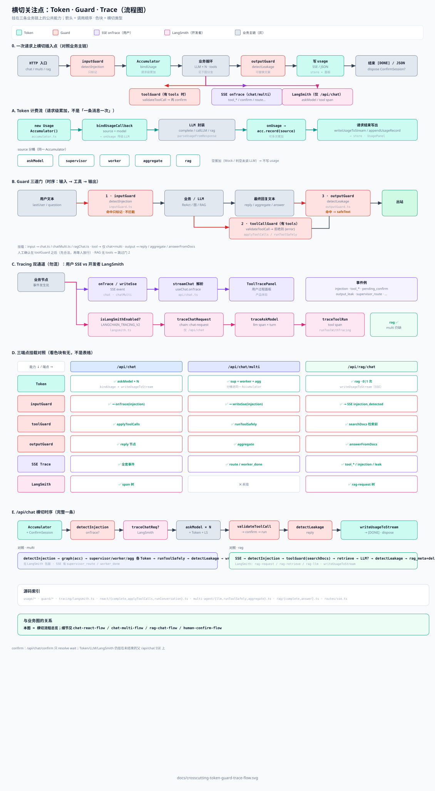
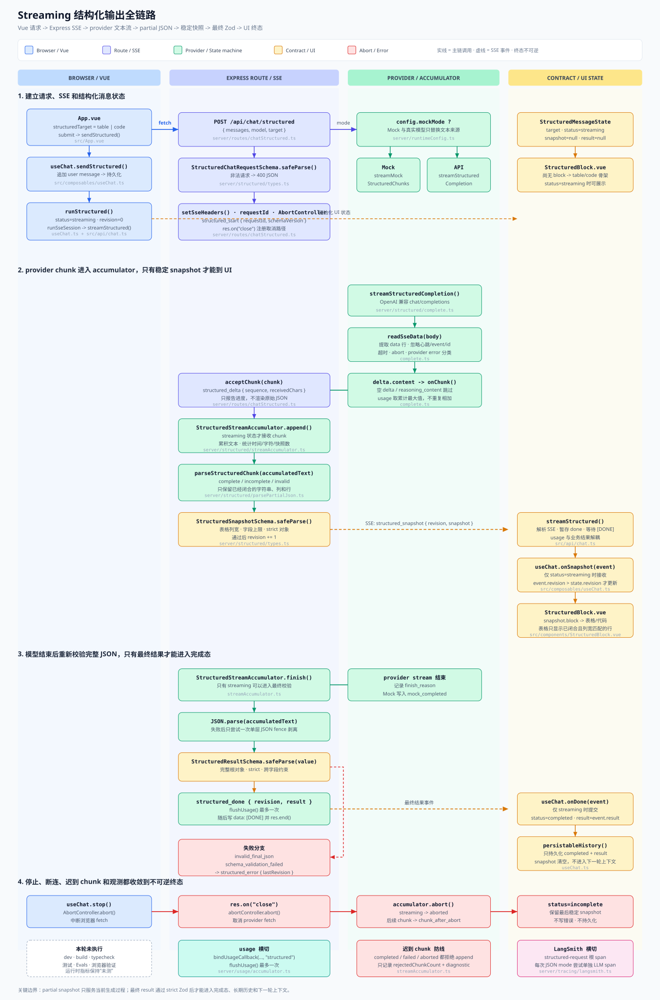
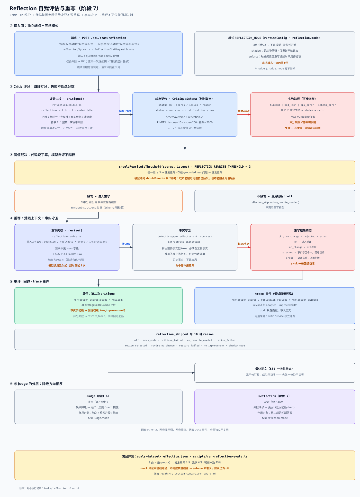
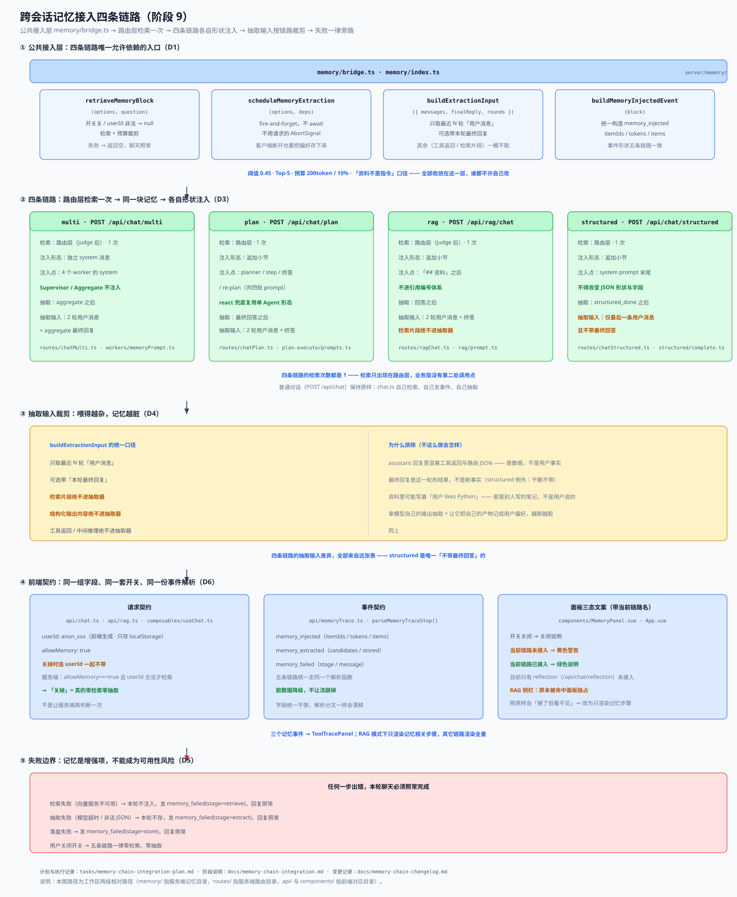
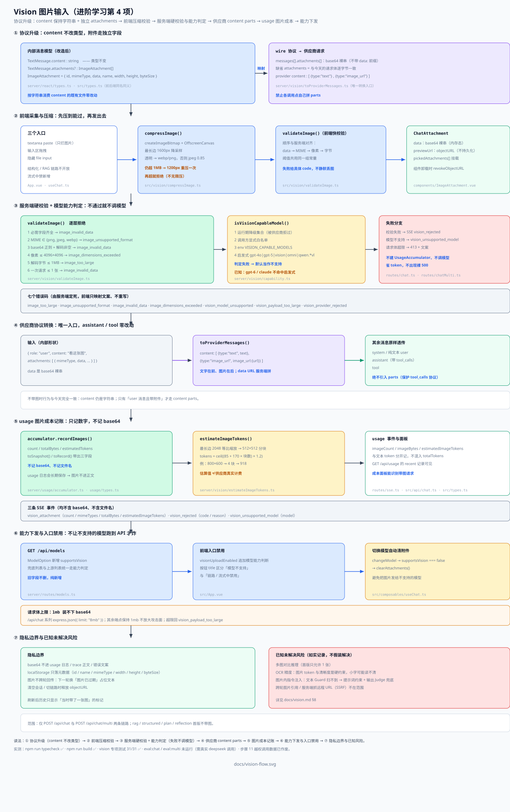
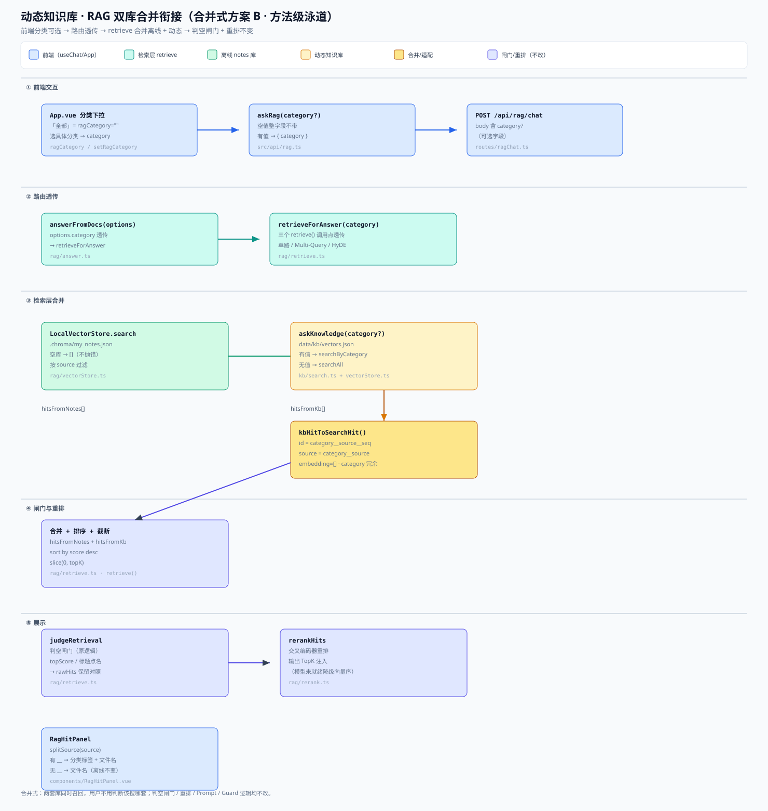
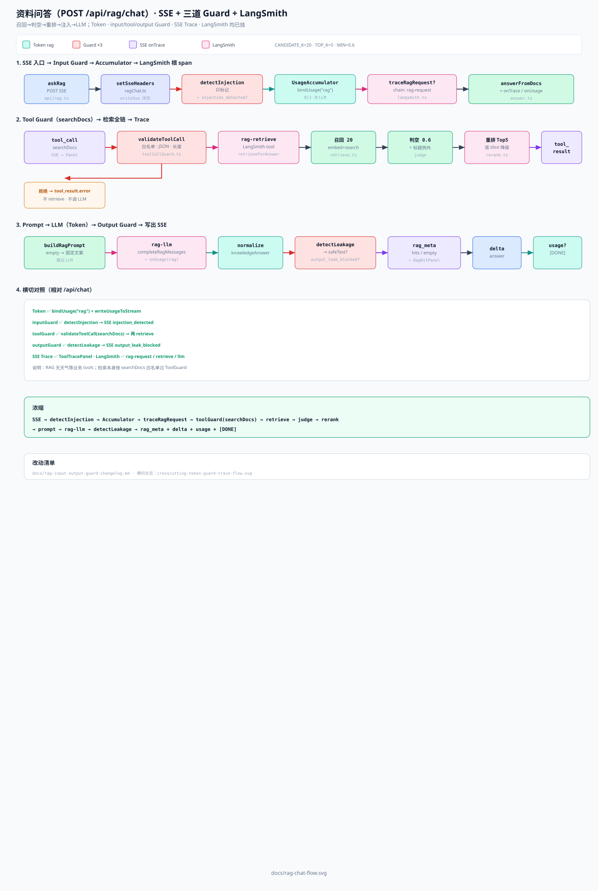
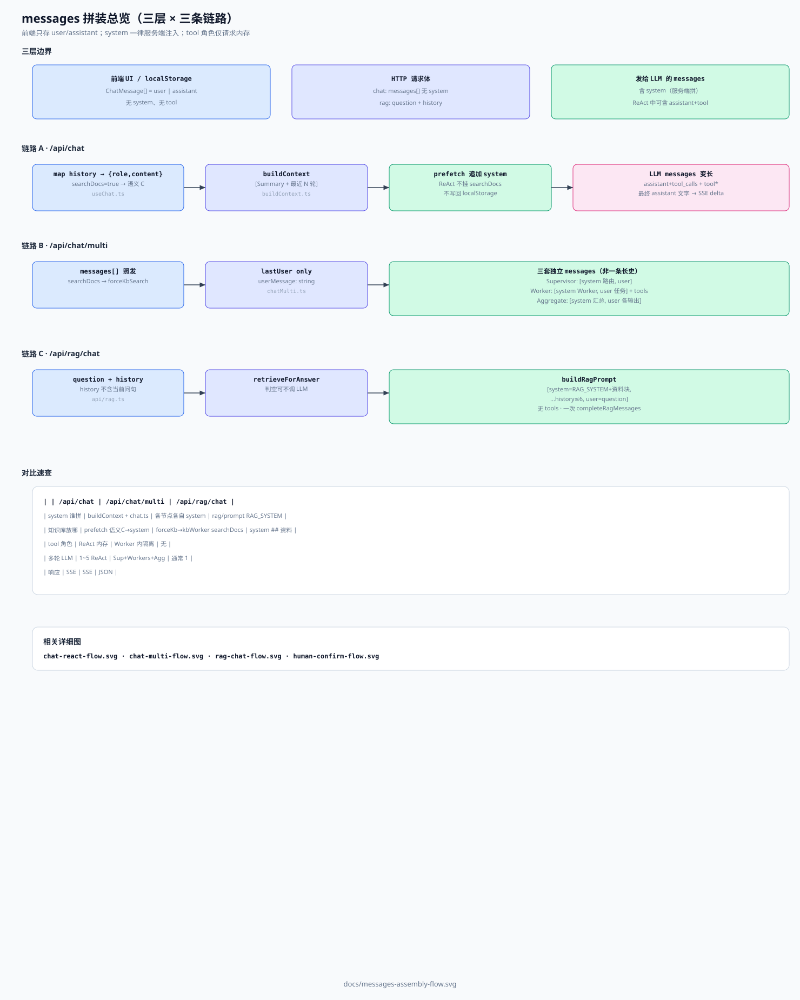
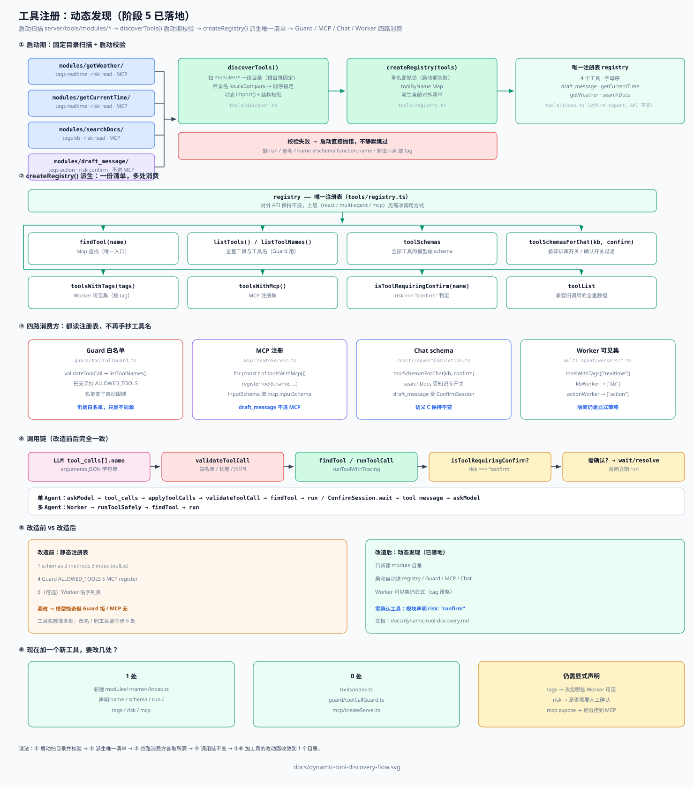

step1-chat · 流程 SVG 索引
泳道流程图（含方法名、调用链，以及 Token / Guard / Trace 横切）。浏览器直接打开本页即可浏览。
Markdown 索引：flows-index.md · 学习计划对照拓扑：project-topology.html






tasks/memory-chain-integration-plan.md











8 · 配套文档（无流程图）
这几份文档没有配套 SVG，但同样属于本项目的正式记录。
- mcp-usage.md — MCP 对外接入：外部客户端配置写法（
command/args/cwd三件套）· 各客户端配置位置 · 暴露哪些工具 · 验证步骤 · 五个坑 - reflection.md — 阶段 7 Reflection：自我评估偏差 · 与 Judge 分层 · 默认不启用条件 · reflection-changelog.md 变更记录 · reflection/README.md 模块说明
- memory.md — 阶段 8 Memory：跨会话记忆 · 事实记忆 vs 语义记忆选型对比 · 隐私设计 · memory-changelog.md 变更记录 · memory/README.md 模块说明 · 拓扑 §6h
- memory-chain-integration.md — 阶段 9 Memory 链路接入：跨会话记忆接进 multi / plan / rag / structured 四条链路 · 六个设计决策（D1 公共接入层 · D2 记忆是数据不是指令 · D3 检索一次 · D4 抽取输入裁剪 · D5 失败旁路 · D6 前端契约）· 四链路注入点对照表 · memory-chain-changelog.md 变更记录 · 拓扑 §6i
9 · 阶段 6 文件清单（LLM-as-Judge）
本阶段涉及的每一个文件都在这里；逐项改动说明见 llm-judge-changelog.md。
- 新增（12）
server/guard/judge.ts— 判定内核：拼 prompt · 调模型 · 解析 JSON · 构造 JudgeResultserver/guard/judgePolicy.ts— 决策层：decideInputAction / decideOutputAction · 判定标签 · SAFE_BLOCK_TEXTserver/guard/judgeRuntime.ts— 运行时层：runInputJudge / runOutputJudge · 真实与 mock 调用器 · trace 事件server/guard/judgeSchema.ts— 结构化输出契约：判别联合 JudgeSchema · 字段上限 · 构造与截断server/guard/judge.test.ts— 单测 11 条（解析 · 坏 JSON · 超时 · schema 错误 · 降级 · 模式回落）evals/judge-dataset.json— 评测集 70 条（dev 40 / test 30 · 9 类）evals/judgeDataset.ts— 数据集加载与校验：类别配额 · dev 下限scripts/check-judge-dataset.ts— 数据集体检 CLI（npm run judge:check）scripts/run-judge-evals.ts— 评测 CLI（npm run eval:judge，支持 split/limit/out/mock）evals/judge-comparison-report.md— 真实模型评测报告evals/judge-comparison-report.smoke.md— mock 冒烟报告（只验管线）docs/llm-judge.md— 阶段完整说明 ·docs/llm-judge-changelog.md— 阶段变更记录 ·docs/llm-judge-flow.svg— 流程图
- 修改（15）
server/runtimeConfig.ts— 新增独立 judge 配置块（mode / model / 超时 / 阈值）server/chat.ts·server/routes/chatMulti.ts·server/routes/ragChat.ts— 输入面接入判定server/rag/answer.ts— 检索面接入判定server/react/runConversation.ts— 输出面接入判定（整段缓冲后判定）server/guard/outputGuard.ts— 导出 REPLACEMENT 统一拦截文案口径server/react/types.ts·src/types.ts— 补 judge_shadow / judge_enforced 事件类型src/api/chat.ts·src/api/rag.ts— SSE 事件解析与透传src/components/ToolTracePanel.vue— 过程面板展示判定结果与分歧evals/types.ts— 评测用例与结果类型package.json— 新增 eval:judge / judge:checktsconfig.server.json— 纳入新增服务端与评测文件
10 · 阶段 7 文件清单（Reflection · 已实现 / enforce 未准入）
本阶段涉及的每一个文件都在这里；逐项改动说明见 reflection-changelog.md，
内核模块说明见 reflection/README.md，
方法级拓扑见 project-topology.html §6g，
细泳道流程图见 reflection-flow.svg。
路径中的 reflection/ 指服务端 reflection 目录，routes/ 指服务端路由目录。

- 新增（16）
reflection/types.ts— 评分契约：判别联合 CritiqueSchema ·schemaVersion· 字段上限REFLECTION_LIMITS· 构造与截断工具reflection/text.ts— 共用小工具：truncateMiddle · stripCodeFencereflection/critic.ts— Critic：拼提示词 · 调模型 · 结构化解析 · 失败不伪造分数 · 阈值规则 shouldRewriteByThresholdreflection/revise.ts— 重写：只拿问题 / 工具事实 / draft / 修订指令（请求中无 tools 字段）· 事实守卫 detectUnsupportedFactsreflection/README.md— 模块说明：职责边界 · 关键契约 · 失败路径 · 扩展指引reflection/types.test.ts·reflection/critic.test.ts·reflection/revise.test.ts— 契约 / Critic / 重写单测routes/chatReflection.ts— 端点POST /api/chat/reflection：校验 → draft → 评分 → 可选重写 → SSE → disposeroutes/chatReflection.test.ts— 端点单测：事件顺序 · skip 原因 · 模式回落evals/dataset-reflection.json·evals/reflectionDataset.ts— A/B 数据集与校验scripts/run-reflection-evals.ts— A/B 评测 CLI（质量分 / 延迟 / token / 成本 四列对比）evals/reflection-comparison-report.md— 评测报告（当前为 mock 数据）docs/reflection.md·docs/reflection-changelog.md— 阶段说明与变更记录docs/reflection-flow.svg— 阶段 7 细泳道流程图（索引页 0f 引用）
- 修改（11）
routes/index.ts— 注册/api/chat/reflectionruntimeConfig.ts— 新增reflection.mode（off / shadow / enforce，默认 off）usage/accumulator.ts·usage/types.ts— 用量来源新增critic/revisesrc/types.ts—ToolTraceStep新增reflection_scored/reflection_revised/reflection_skippedapi/chat.ts— 新增 streamReflection（SSE 解析）composables/useChat.ts—onTracepush 反思事件ToolTracePanel.vue— 三种 kind 渲染分支（rubric 只在调试面板，不入正文）tsconfig.server.json— 纳入新增服务端、评测与脚本文件docs/flows-index.html— 本页：新增 0f Reflection 入口与阶段 7 文件清单docs/project-topology.html— 拓扑页：新增 §6g Reflection
11 · 阶段 8 文件清单（Memory · 已实现 / 五链路已接入）
本阶段涉及的每一个文件都在这里；逐项改动说明见 memory-changelog.md，
内核模块说明见 memory/README.md，
方法级拓扑见 project-topology.html §6h，
细泳道流程图见 memory-flow.svg。
路径中的 memory/ 指服务端记忆目录，routes/ 指服务端路由目录，
api/、components/、composables/ 指前端对应目录。
- 新增（18）
memory/types.ts— 线协议：MemoryFact · MemoryExtractResult · 阈值常量 · userId 规则 · MemoryTraceEventmemory/store.ts— 存储：路径解析 · 用户级锁 · 临时文件 + 原子 rename · 软删除 · embedding 回写 · 损坏自愈memory/extract.ts— 抽取器：脱敏 · 提示词 · 结构化解析 · createMemoryModelCallermemory/merge.ts— 去重合并：mergeFactByKey · 冲突标记 · 语义合并 · 补向量memory/retrieve.ts— 检索：retrieveRelevantFacts · 阈值 0.45 · Top-5 · 缺向量补算memory/context.ts— 渲染：renderMemoryBlock · MEMORY_BLOCK_HEADER（资料口径）memory/pipeline.ts— 编排：extractAndStoreFacts（抽取 -> 合并 -> 落盘）memory/embedder.ts— 向量化：defaultMemoryEmbedder · cosineSimilarity · tryEmbedmemory/README.md— 模块说明：职责边界 · 关键契约 · 失败路径 · 扩展指引routes/memory.ts—/api/memory：列表 / 新增 / 修改 / 删除 / 清空api/memory.ts— 前端记忆接口封装components/MemoryPanel.vue— 前端记忆面板：列出 / 改 / 删 / 清空 / 冲突裁决scripts/test-memory.ts— 跨会话 / 语义 spike / 并发与损坏自愈（npm run test:memory）scripts/test-chat-chains.ts— 五链路 + 记忆接口回归（npm run test:chains）scripts/check-memory-recall.ts— 检索阈值标定 CLI（相关对 / 无关对相似度分布）docs/memory.md·docs/memory-changelog.md— 阶段说明与变更记录docs/memory-flow.svg— 阶段 8 细泳道流程图（索引页 0g 引用）
- 修改（15）
chat.ts— retrieveMemoryBlock · scheduleMemoryExtraction ·MEMORY_INJECT_LIMIT·MEMORY_EXTRACT_TIMEOUT_MSroutes/chat.ts— 透传userId/allowMemory到单 Agent 链路routes/index.ts— 注册/api/memorycontext/buildContext.ts— 记忆块预算裁剪（MEMORY_CONTEXT_TOKEN_CAP/MEMORY_CONTEXT_BUDGET_RATIO）context/types.ts—ContextMemoryBlock/ContextMemoryItem· 记忆 id 与 token 统计usage/accumulator.ts— 用量来源新增memoryapi/chat.ts— 请求体带userId/allowMemory· SSE 解析三个记忆事件composables/useChat.ts—memoryUserId/allowMemory/memoryFacts状态与增删改清空App.vue— 顶栏记忆开关 · 记忆管理浮层 ·memoryInjectionSupported口径components/ToolTracePanel.vue— 三个记忆事件的渲染分支（注入明细含相似度）types.ts— 前端补三个记忆 trace 事件类型package.json— 新增test:memory/test:chainstsconfig.server.json— 纳入新增服务端与脚本文件docs/flows-index.html— 本页：新增 0g Memory 入口与阶段 8 文件清单docs/project-topology.html— 拓扑页：新增 §6h Memory
12 · 阶段 9 文件清单（Memory Chain Integration · 代码已完成 / 实测待补）
本阶段涉及的每一个文件都在这里；逐项改动说明见 memory-chain-changelog.md，
阶段完整说明见 memory-chain-integration.md，
方法级拓扑见 project-topology.html §6i，
细泳道流程图见 memory-chain-flow.svg，
计划与逐条执行记录见 tasks/memory-chain-integration-plan.md。
路径中的 memory/ 指服务端记忆目录，routes/ 指服务端路由目录，
api/、components/、composables/ 指前端对应目录。

- 新增（7）
memory/bridge.ts— 公共接入层：retrieveMemoryBlock · scheduleMemoryExtraction · buildExtractionInput · buildMemoryInjectedEventmemory/index.ts— 记忆模块统一出口multi-agent/workers/memoryPrompt.ts— Worker 记忆拼装：buildWorkerMessages（无记忆时逐字不变）api/memoryTrace.ts— 前端记忆事件统一解析：parseMemoryTraceStep（三种事件 + 脏数据降级）docs/memory-chain-integration.md·docs/memory-chain-changelog.md— 阶段说明与变更记录docs/memory-chain-flow.svg— 阶段 9 细泳道流程图（索引页 0h 引用）
- 修改（41）
- 服务端（28）
chat.ts— 删私有实现改调 bridge；CreateChatStreamOptions.memoryBlock落地为「提供方已处理」语义memory/context.ts— MEMORY_SECTION_TITLE · renderMemorySection（plan / rag / structured 三链路措辞逐字一致）memory/README.md— 文件地图补bridge.ts/index.tsroutes/chatMulti.ts— judge 后检索一次 → 发memory_injected→ 下传 → aggregate 后抽取multi-agent/graph.ts—MultiAgentGraphOptions.memoryBlock下发给 workermulti-agent/workers/types.ts— WorkerContext.memoryBlockmulti-agent/workers/generalWorker.ts·kbWorker.ts·actionWorker.ts·realtimeWorker.ts— 初始 messages 改走公共拼装，角色 prompt 未动multi-agent/README.md— 补workers/memoryPrompt.ts与记忆下发口径routes/chatPlan.ts— schema 加userId/allowMemory；路由层检索一次；react 兜底带memoryBlock；统一抽取plan-execute/prompts.ts— buildMemorySection；三处 prompt 共用并各加「【记忆使用边界】」plan-execute/planner.ts·executor.ts·finalReply.ts·replan.ts— context 增加memoryBlock并透传plan-execute/graph.ts—RunPlanGraphOptions.memoryBlock全图下传plan-execute/prompts.test.ts— 新增两条断言（无记忆不出现记忆小节 / 有记忆必现且带边界）plan-execute/README.md— 补记忆注入口径routes/ragChat.ts— judge 后检索一次并发事件；下传；回答后抽取（检索片段不入抽取器）rag/prompt.ts— 「## 资料」之后追加「## 用户长期记忆」并写明「不要给它编号」rag/answer.ts— answerFromDocs 第 7 参扩为optionsrag/README.md— 补记忆注入口径routes/chatStructured.ts— 检索一次并发事件；下传；structured_done之后只抽取最后一条用户消息；记忆 usage 单独记账structured/complete.ts— buildSystemPrompt(target, memoryBlock)；无记忆时 prompt 逐字不变structured/types.ts— schema 加可选userId/allowMemory（.strict()必须加）structured/README.md— SSE 事件表 / 数据流 / 长期记忆口径同步
- 前端（7）
- 修改（41）· 前端（7）
api/chat.ts— streamPlan / streamStructured 加userId/allowMemory；streamChat 手写解析换成统一解析；streamStructured 加onTraceapi/rag.ts— askRag 加userId/allowMemory；事件类型补记忆字段；接统一解析composables/useChat.ts— plan / structured / rag 三处统一传memoryUserId.value/allowMemory.valuetypes.ts—ToolTraceStep补memory_failed变体App.vue—memoryInjectionSupported改为「只有 reflection 没接」；memoryChainLabel·memoryTraceSteps；RAG 侧栏接线components/MemoryPanel.vue— 新增chainLabel；提示改三态并带链路名；新增.notice.oncomponents/ToolTracePanel.vue— 补memory_failed分支与 memoryStageText
- 脚本与文档（6）
- 修改（41）· 脚本与文档（6）
scripts/test-chat-chains.ts— 四条链路各加三段记忆断言（开 / 关 / 抽取条数不变）docs/flows-index.html— 本页：新增 0h Memory 链路接入入口与阶段 9 文件清单docs/flows-index.md— Markdown 版索引同步docs/project-topology.html— 拓扑页：§6h 接入现状更新 + 新增 §6i 阶段 9docs/memory-flow.svg— 阶段 8 图的链路现状段由「四链路未接入」改为「五链路已接入」README.md— 能力表补长期记忆一行；目录树补memory/与memoryTrace.ts
- 服务端（28）
- 实测状态（必须如实读）
npm run typecheck— ✅ 通过npm run build— ❌ 未运行（用户要求只跑 typecheck）npm run test:chains— ❌ 未运行（用户要求跳过实测以省资源）- 端到端跨会话脚本
scripts/test-memory-chains.ts— ❌ 未建（归后续阶段） - 单元测试 — ❌ 未写（归后续阶段）